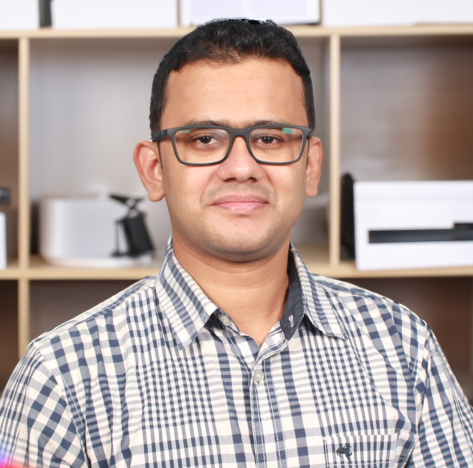
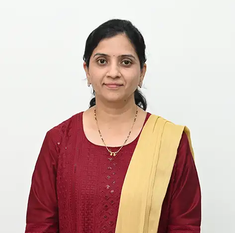

Prof. VasiAhmed Ebrahim Shaikh
Professor
Liquid-crystalline polymers, biopolymers, microplastics, water purification, and polymer chemistry.
Professor
Liquid-crystalline polymers, biopolymers, microplastics, water purification, and polymer chemistry.

Associate Professor
Conducting polymers and metal-oxide nanocomposites, including PEDOT/ZnO materials.
Assistant Professor
Environmental chemistry, wastewater treatment, and materials chemistry.

Assistant Professor
Metal-organic frameworks for gas storage and carbon capture, molecular nanomagnets, spin-crossover switches, and fluorescent sensors.

Assistant Professor
Polymer science, biopolymers, biocatalysis, dendrimers, green synthesis, anticorrosive coatings, biodiesel, and computational toxicology.
Assistant Professor
Doctoral research in inorganic chemistry focused on metal complexes and drug function.

Assistant Professor
Synthetic organic chemistry, catalysis, water remediation, and asymmetric synthesis.
Assistant Professor
Conducting polymers, nanocomposites, protective coatings, biodegradable polymers, and packaging applications.

Assistant Professor
Nanomaterial synthesis, plasmonics, metamaterials, nanophotonics, and single-particle spectroscopy and microscopy.